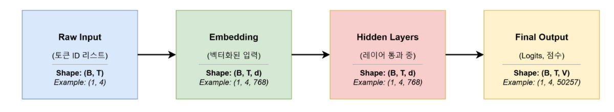
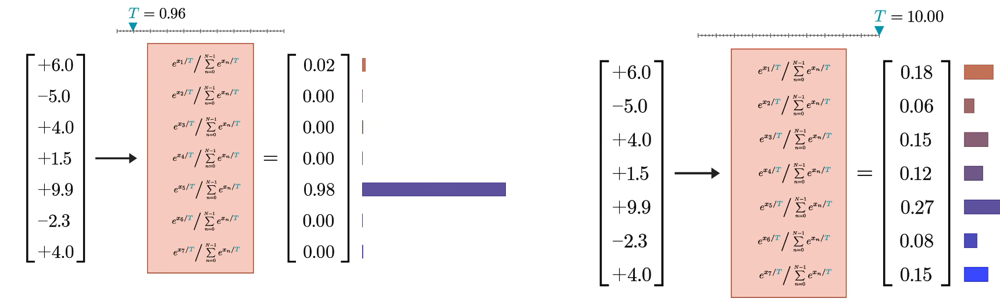
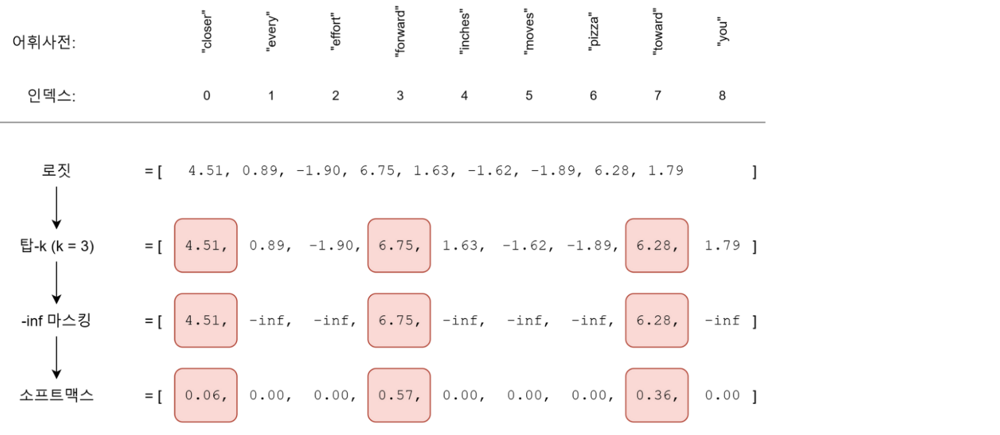

12. GPT 모델 입출력 — 벡터에서 다음 토큰으로
GPT는 입력 토큰마다 어휘의 모든 후보에 대한 점수를 출력한다. 생성에서는 마지막 위치의 점수로 다음 ID 하나를 고르고, 그 ID를 문맥 뒤에 붙여 반복한다. 은닉 벡터의 좌표와 토큰 ID를 구별하는 것이 핵심이다.
학습 목표는 shape를 추적하고 greedy·temperature·top-k의 차이를 설명하는 것이다. 기본 경로는 1~3절이며, 샘플링을 비교하려면 4절을 읽는다.
시각적으로 확인할 핵심
위에서 아래로 읽으며, 어떤 단계에서 C가 V로 바뀌는지 찾으세요.
![길이 T와 후보 수 V는 다른 축이다: 입력 ID · [2,3] B=2 · T=3; 은닉 표현 · [2,3,8] C=8 · 토큰별 특징; LM head · [2,3,11] V=11 · 어휘 후보 점수; 마지막 위치 · [2,11] 위치 축에서 마지막 선택; 다음 ID · [2,1] V축에서 후보 인덱스 선택](../resources/b42121f0d0b475dc8733-08_%ED%95%B5%EC%8B%AC%EA%B4%80%EA%B3%84.svg)
LM head는 은닉 폭 8을 어휘 크기 11로 바꾼다. 다음 ID는 후보 점수의 인덱스다.
1. 폭 C와 어휘 크기 V는 서로 다르다
설명용으로 B=2문장, T=3위치, C=8은닉 특징, V=11어휘를 사용한다. 숫자가 작아서 실제 언어능력을 나타내지는 않는 계산 예다.
| 단계 | shape | 값의 뜻 |
|---|---|---|
| 입력 ID | [2,3] |
정수 토큰 번호 |
| token+position embedding | [2,3,8] |
토큰별 실수 표현 |
| 반복 GPT 블록·final norm | [2,3,8] |
문맥이 반영된 은닉 표현 |
| LM head | [2,3,11] |
각 위치의 11개 후보 점수(logits) |
| 마지막 위치 선택 | [2,11] |
각 문장 뒤에 올 후보 점수 |
| 다음 ID 선택 | [2,1] |
문장당 정수 하나 |
| 입력 뒤에 붙이기 | [2,4] |
길이가 하나 증가한 문맥 |
행벡터 표기에서 LM head의 가중치가 [C,V]이면 H @ W가 [B,T,V]를 만든다. 선형층 라이브러리의 저장 weight가 [V,C]일 수도 있으므로 표기와 저장 방향을 구분한다. 블록 내부는 잔차 덧셈을 위해 C를 보존하지만 마지막 head는 C를 V로 바꾼다. 원문 146쪽 ‘토큰수’는 현재 길이 T가 아닌 어휘 크기 V로 명확히 읽는다.
2. logits는 확률이 아니다
logits는 음수도 가능한 점수다. 후보 3개의 설명용 logits를 (2,1,0)으로 놓자. 큰 값을 빼도 softmax는 같으므로 (0,-1,-2)의 지수를 사용한다.
지수값 = (1, 0.367879, 0.135335)
분모 = 1.503214
softmax 확률 ≈ (0.665241, 0.244728, 0.090031)
greedy는 가장 큰 logit의 인덱스를 고른다. 이 예에서 인덱스 0이다. softmax는 순서를 보존하므로 greedy에 확률 변환은 필수가 아니다. 원문 147쪽의 ‘마지막 임베딩에서 최대 위치’는 마지막 위치에 대한 LM head의 어휘 logits에서 최대 인덱스로 보완한다. 은닉 폭 C의 최대 좌표를 ID로 쓰면 V개 후보를 평가한 것이 아니다.
3. 생성 반복과 학습의 경계
현재 ID 문맥 → 허용 길이만 남김 → 모델 순전파
→ 마지막 유효 위치 logits → 다음 ID 선택 → 문맥 뒤에 추가
→ EOS 또는 생성 길이 한도면 종료, 아니면 반복
위 흐름은 의사 코드이며 실행 API가 아니다. 학습된 모델은 보통 평가 모드로 바꾸고 자동미분을 기록하지 않은 채 생성한다. 긴 문맥을 잘라야 하는지는 위치 인코딩과 모델의 context 한도에 달린다. 오른쪽 padding이 있는 배치는 배열의 마지막 위치와 마지막 유효 토큰 위치가 다르다. EOS는 모델이 학습한 종료 토큰이며 항상 생성된다는 보장은 없으므로 길이 제한도 필요하다. 이 과정은 가중치를 갱신하지 않는다.
4. 같은 점수에서 선택 방식을 바꿔 보기
온도 τ>0에서 softmax(logits/τ)를 계산한다. 문맥 길이 T와 혼동하지 않도록 온도는 τ로 쓴다. τ=2이면 위 점수는 (1,0.5,0), 확률은 약 (0.506480,0.307196,0.186324)다. τ가 커질수록 이 예에서는 분포가 평평해진다. 유한한 양의 온도만 바꾸고 greedy를 계속 사용하면 최대 인덱스는 바뀌지 않는다. τ=0을 식에 직접 넣지 않는다.
top-k는 높은 점수 후보 k개만 남겨 다시 정규화한 뒤 확률적으로 뽑는다. 위 예에서 k=2이면 후보 0·1의 확률은 약 (0.731059,0.268941), 후보 2는 0이다. 후보를 남기는 단계와 랜덤으로 뽑는 단계를 구분하자. k=1은 동점 처리 규칙이 정해졌을 때 greedy와 같다. 실제 랜덤 결과는 seed와 구현에 영향을 받으므로 본문 숫자는 샘플 한 번의 관측값이 아니라 정확한 분포 계산이다.
5. 이해 확인
- B=2,T=5,C=8,V=11로 T만 바꾸면 logits shape와 다음 ID shape는?
- 은닉 표현의 최대 좌표를 토큰 ID로 쓰면 왜 틀리는가?
- top-k에서 k=3은 위 3후보 예에 무슨 효과가 있는가? 온도를 바꾸고 argmax만 한다면?
해설과 돌아갈 위치
[2,5,11]과[2,1]. 입력 길이는 logits의 위치 축만 바꾼다. 1절.- 은닉 축의 의미는 특징이고, ID 후보 점수는 LM head 이후의 V축이다. 1~2절.
- 모든 후보를 남기므로 자르기 효과가 없다. 양의 온도에 대한 argmax는 그대로다. 4절.
이제 13장에서 가중치에 남는 정보와 매 입력마다 생기는 표현을 구별한다.
6. 원문 수치로 추적하는 생성
원문 해설. 146쪽의 B=1,T=4,C=768,V=50,257에서 logits는 [1,4,50257]이다. 총 201,028개 점수 중 생성에 직접 쓰는 마지막 행은 50,257개다. 어휘 크기는 현재 입력의 네 토큰 수와 다르다. 아래 네 상자에서 C가 V로 바뀌는 지점을 찾는다.

입력 ID는 범주 번호, 은닉 값은 문맥 특징, logits는 후보 점수다. 147쪽의 Hello, 쉼표, I, am 예에서 ID 257을 골라 a를 덧붙이는 과정은 마지막 은닉 좌표의 최대값을 고르는 과정이 아니다. 후보 축 V로 투영한 후 선택한다. 문자열 앞 공백과 토큰 경계는 토크나이저에 따라 달라져 다른 토크나이저에 이 ID를 그대로 옮길 수 없다.
원문 수치 검산. 148쪽의 logits [6,-5,4,1.5,9.9,-2.3,4]에서 τ=0.96이면 최대 후보 확률은 약 0.978806, τ=10이면 약 0.267521다. 아래 양쪽 수식에서 나누는 것은 확률 자체가 아니라 지수에 들어갈 logit이다.

작은 온도에서는 최대 후보가 거의 독점하고 큰 온도에서는 작은 점수 후보도 가능성이 커진다. 이 변화가 답의 정확성을 자동으로 높이는 것은 아니다. 원하는 다양성과 반복 가능성에 맞춰 선택 정책을 정한다.
149쪽의 top-k에서는 9개 중 점수 4.51,6.75,6.28의 세 후보만 남는다. 아래 -inf 마스킹과 softmax 행을 비교한다.

남긴 후보 확률을 다시 합 1로 정규화한다. 그림의 0.06·0.57·0.36은 거친 표시이며 정확한 값은 페이지 해설과 검산 기록을 따른다. 무작위 표본 추출은 이 재정규화 다음의 별도 단계다. top-k와 온도는 함께 쓸 수 있으나 변환 순서·동점·난수 seed를 명시해야 비교가 가능하다.
내부 활동. 분포 (0.665241,0.244728,0.090031)의 누적 구간은 [0,0.665241), [0.665241,0.909969), [0.909969,1)이다. 균등 난수 u=0.8이면 어느 후보를 고르는가? 두 번째 구간이므로 ID 1이다. 이것은 실제 LLM 실행 결과가 아니라 샘플링 원리를 손으로 수행하는 예다.
페이지별 복습
144 표지 · 145 블록 shape · 146 출력 shape · 147 생성 반복 · 148 온도 · 149 top-k